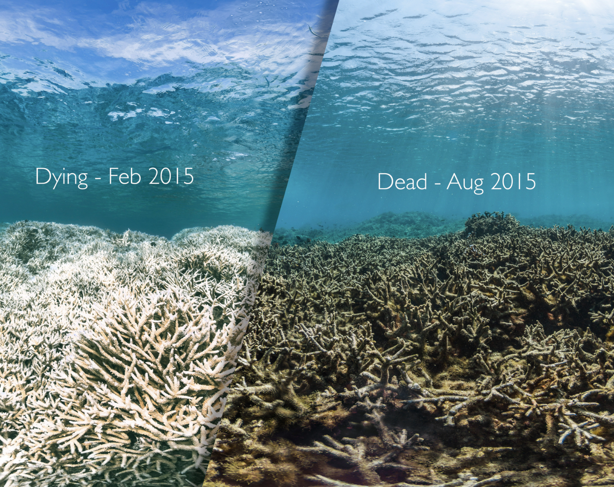
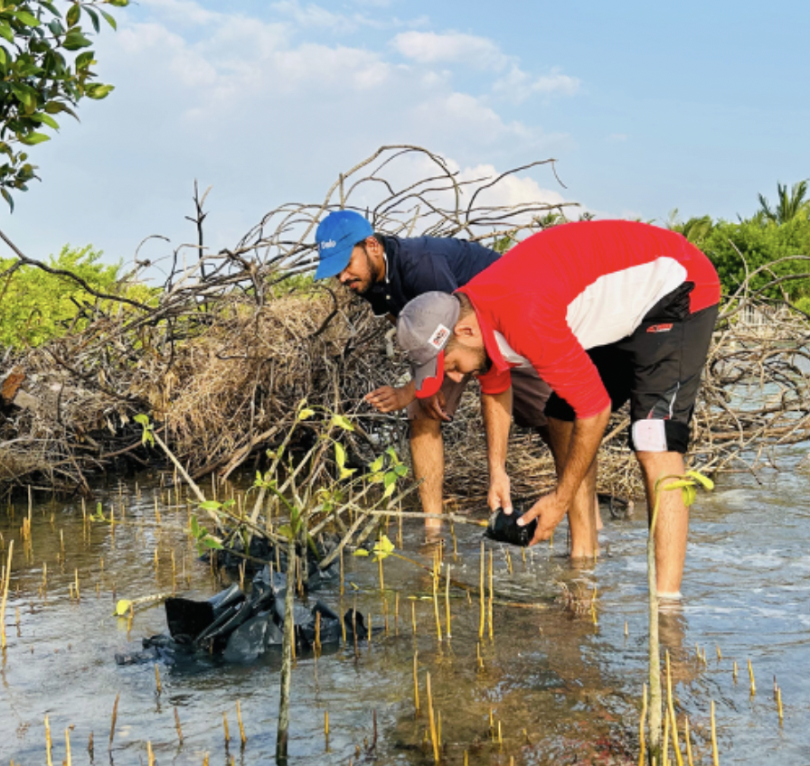

Ocean acidification refers to the process by which the world’s oceans become more
acidic due to the absorption of excess carbon dioxide (CO₂) from the atmosphere. When CO₂ dissolves
in seawater, it reacts with water to form carbonic acid, which lowers the ocean’s pH level. Over time, this
change in chemistry disrupts the natural balance of marine ecosystems. Since the industrial revolution,
the ocean has absorbed a significant portion of human-produced CO₂, making ocean acidification
one of the most serious environmental challenges facing our planet today.
Ocean Acidification Awareness
Understanding the crisis and taking action to protect our marine ecosystems.
What is Ocean Acidification?

Impacts of Ocean Acidification on Marine Life
The primary cause of ocean acidification is the increase in carbon
dioxide emissions from human activities such
as burning fossil fuels, deforestation, and industrial processes. As atmospheric CO₂ levels rise,
more of it is absorbed by the oceans. Additionally, pollution and agricultural runoff can worsen the problem
by altering water chemistry in coastal areas. These human-driven changes accelerate the rate of acidification, making it difficult for marine ecosystems to adapt naturally.
dioxide emissions from human activities such
as burning fossil fuels, deforestation, and industrial processes. As atmospheric CO₂ levels rise,
more of it is absorbed by the oceans. Additionally, pollution and agricultural runoff can worsen the problem
by altering water chemistry in coastal areas. These human-driven changes accelerate the rate of acidification, making it difficult for marine ecosystems to adapt naturally.

How Students Can Help Reduce Ocean Acidification

Students can make a real difference. Here are practical actions:
Students can play an important role in reducing ocean acidification by making environmentally conscious choices in their daily lives. Simple actions such as reducing energy consumption, using public transportation, and minimizing plastic use can help lower carbon emissions. Raising awareness through social media, school projects, and community initiatives can also make a significant impact. By supporting sustainable practices and advocating for environmental protection, students can contribute to long-term solutions.Solutions and Innovations to Combat Ocean Acidification
Addressing ocean acidification requires both global and local efforts. One key solution is reducing carbon emissions by transitioning to renewable energy sources
such as solar and wind power. Scientists are also exploring innovative approaches, including carbon capture
technologies and the restoration of marine ecosystems like seagrass beds and mangroves,
which naturally absorb CO₂. Governments, organizations, and individuals must work together to implement sustainable policies
and practices that protect ocean health for future generations.
such as solar and wind power. Scientists are also exploring innovative approaches, including carbon capture
technologies and the restoration of marine ecosystems like seagrass beds and mangroves,
which naturally absorb CO₂. Governments, organizations, and individuals must work together to implement sustainable policies
and practices that protect ocean health for future generations.
